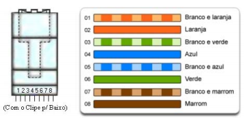
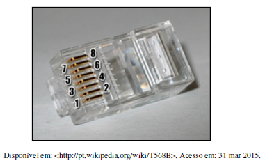

O analista de tecnologia da informação deve especificar os cabos de pares trançados para interligar as estações de trabalho de uma sala do Tribunal à Switch localizada no mesmo andar da sala onde estão as estações de trabalho. Adotando a Norma TIA/EIA 568-B, e a codificação de terminação T568A, os pinos de números 1 e 2 do conector RJ-45 devem receber, respectivamente, os fios de cores.
Analise a figura e as assertivas abaixo.

I. Trata-se da crimpagem padrão EIA/TIA 586A.
II. A norma pode ser aplicada nos cabos Categoria 5, 5e e 6.
III. Durante a crimpagem, a posição do clipe é irrelevante.
É correto o que se afirma em:
Observe a figura a seguir, que apresenta um conector RJ-45 e sua respectiva pinagem numerada de 1 a 8.

Seguindo a numeração ilustrada na figura, qual é a sequência de cores desses pinos em um cabo UTP CAT5e, que utiliza o padrão de cabeamento T568B?
A utilização de cabeamento estruturado segue normas, tal como ANSI/EIA/TIA-568 para a padronização de conectores, cabos, entre outras coisas. Qual alternativa está correta sobre o pino e a cor do fio no padrão T568B?
NÃO é uma característica dos cabos ópticos do tipo monomodo:
Dado o crescimento da empresa X, foi necessário alugar outro prédio, distante 7 km do primeiro que ocupava. Para realizar a interligação de rede entre os dois prédios, sem a utilização de equipamentos com protocolos proprietários, foi necessária a utilização de:
A interconexão entre as estações de uma rede local de computadores é feita através de um meio físico de transmissão. Com relação às tecnologias de cabeamento de rede, analise as afirmativas a seguir:
I. As fibras óticas são adequadas quando se deseja atingir grandes distâncias ou altas velocidades de transmissão, porém precisam ser isoladas para não sofrer interferências eletromagnéticas.
II. O cabo coaxial fino (Thin Ethernet - 10Base2) é bastante utilizado em redes locais por ser maleável, possuir boa imunidade a ruídos eletromagnéticos de baixa frequência e manter sua capacidade constante, sem repetidores, com até 300 metros de comprimento.
III. Par trançado com blindagem (STP - Shielded Twisted Pair) deve ser utilizado em ambientes com agressivos ruídos eletromagnéticos, pois estes possuem maior imunidade às interferências externas de origem eletromagnética ou de radiofrequência.
Está correto o que se afirma em:
Assinale a alternativa que apresenta um cabo de rede.:
A respeito de meios de transmissão de sinais, assinale a opção correta.
Os fios utilizados em redes de computadores são projetados de modo a minimizar a interferência eletromagnética que depende:
No processo de crescimento de uma rede de dados de 100 Mbps dentro de um edifício, verificou-se a necessidade da criação de uma conexão a um outro prédio, distante 1,5km. Para manter igual velocidade, com total imunidade a interferências elétricas e eletromagnéticas, e com o menor custo possível, a indicação para o meio físico dessa conexão é o uso de:
Com objetivo de especificar o tipo de meio de transmissão para a instalação física da rede de computadores do TCE-RS um técnico, a partir de uma pesquisa no mercado sobre os meios de transmissão cabeados, identificou e comparou os meios de transmissão com fios de cobre e os meios com fibra óptica. Ele verificou que a fibra ótica possui a vantagem, sobre o fio de cobre, de:
José, Técnico de Tecnologia da Informação, deve escolher e adquirir o meio de transmissão mais adequado para implementar uma rede local de computadores de uma sala com área de 50 m2 e 10 computadores pessoais.
Considerando os aspectos técnicos de melhor desempenho e confiabilidade e os aspectos mercadológicos de disponibilidade e custo atuais, a melhor escolha para a tecnologia de transmissão para essa rede é:
Em redes de computadores, os cabos de par trançado vêm substituindo os cabos coaxiais desde o início da década de 1990. Uma das atividades de um técnico de suporte é a crimpagem deste tipo de cabo. Para realizar essa atividade, deve-se:
A tecnologia sem fio para transmitir sinais de rádio de alta velocidade em um caminho de linha de mira entre estações repetidoras espaçadas a uma distância de aproximadamente 50 quilômetros é:
Uma empresa está montando um ambiente de transmissão de dados com a tecnologia sem fio 802.11n. Para prevenir interferências, deve-se evitar no ambiente o uso de:
Com relação ao desempenho de uma rede sem fio, analise as afirmativas a seguir.
I. Telefones sem fio de 900 MHz pouco interferem no desempenho de uma rede sem fio 802.11g.
II. Dispositivos 802.11g não podem operar em modo de compatibilidade com dispositivos 802.11b.
III. Redes sem fio 802.11n podem operar nas frequências de 2,4 ou 5 GHz.
Assinale:
Considerando que a especificação 802.11 para WLAN (Wireless Local Area Network) define os protocolos de acesso ao meio e de meio físico em uma rede sem fio, onde todos os dispositivos na rede trabalham na faixa de 2.4GHz ou de 5GHz. Assinale a alternativa correta:
Um dos meios de transmissão de dados amplamente utilizados na atualidade é o sinal de rádio frequência transmitido pelo ar, devido às vantagens de propagação omnidirecional e a não necessidade do uso de cabo, ou seja, do meio guiado. Dentre as várias frequências de rádio, a transmissão de dados em rádio frequência é realizada utilizando sinais de alta frequência, por exemplo, 2.4GHz, que possui como característica:
Sobre propagação por radio frequência, assinale a alternativa correta: